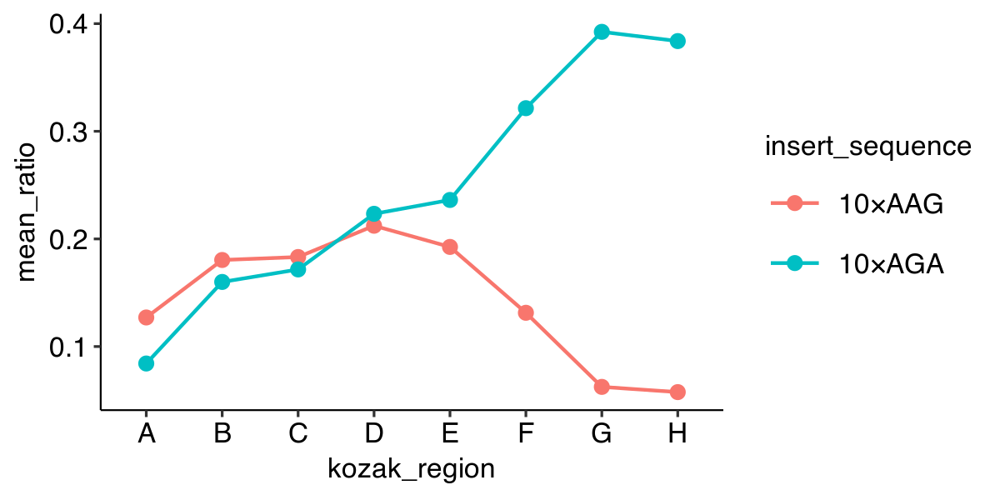

R / tidyverseArvind R. Subramaniam
Assistant Member
Basic Sciences Division and Computational Biology Program
Fred Hutchinson Cancer Research Center
Tidyverse Functions for Working with Tabular Data| Import/Export | Visualize | Transform |
|---|---|---|
read_tsv |
geom_point |
select |
write_tsv |
geom_line |
filter |
facet_grid |
arrange |
|
mutate |
||
join |
||
group_by |
||
summarize |
DataFrame (tibble)library(tidyverse) data <- read_tsv("data/example_dataset_1.tsv")
print(data, n = 5)
# A tibble: 16 x 7 strain mean_yfp mean_rfp mean_ratio se_ratio insert_sequence kozak_region <chr> <int> <int> <dbl> <dbl> <chr> <chr> 1 schp688 1748 20754 0.755 0.066 10×AGA A 2 schp684 3294 20585 1.44 0.021 10×AGA B 3 schp690 3535 20593 1.54 0.018 10×AGA C 4 schp687 4658 20860 2.00 0.021 10×AGA D 5 schp686 5000 21171 2.12 0.023 10×AGA E # … with 11 more rows
%>% operator to chain commandsdata %>%
print(n = 5)
# A tibble: 16 x 7 strain mean_yfp mean_rfp mean_ratio se_ratio insert_sequence kozak_region <chr> <int> <int> <dbl> <dbl> <chr> <chr> 1 schp688 1748 20754 0.755 0.066 10×AGA A 2 schp684 3294 20585 1.44 0.021 10×AGA B 3 schp690 3535 20593 1.54 0.018 10×AGA C 4 schp687 4658 20860 2.00 0.021 10×AGA D 5 schp686 5000 21171 2.12 0.023 10×AGA E # … with 11 more rows
print(data, n= 5)
data %>%
print(., n = 5)
data %>%
print(n = 5)
select columnsdata %>%
print(n = 2)
# A tibble: 16 x 7 strain mean_yfp mean_rfp mean_ratio se_ratio insert_sequence kozak_region <chr> <int> <int> <dbl> <dbl> <chr> <chr> 1 schp688 1748 20754 0.755 0.066 10×AGA A 2 schp684 3294 20585 1.44 0.021 10×AGA B # … with 14 more rows
data %>% select(strain, mean_ratio, insert_sequence, kozak_region) %>% print(n = 2)
# A tibble: 16 x 4 strain mean_ratio insert_sequence kozak_region <chr> <dbl> <chr> <chr> 1 schp688 0.755 10×AGA A 2 schp684 1.44 10×AGA B # … with 14 more rows
filter rowsdata %>% filter(kozak_region == "A")
# A tibble: 2 x 7 strain mean_yfp mean_rfp mean_ratio se_ratio insert_sequence kozak_region <chr> <int> <int> <dbl> <dbl> <chr> <chr> 1 schp688 1748 20754 0.755 0.066 10×AGA A 2 schp679 2528 19906 1.15 0.056 10×AAG A
data %>% filter(kozak_region == "A", insert_sequence == "10×AGA")
# A tibble: 1 x 7 strain mean_yfp mean_rfp mean_ratio se_ratio insert_sequence kozak_region <chr> <int> <int> <dbl> <dbl> <chr> <chr> 1 schp688 1748 20754 0.755 0.066 10×AGA A
data %>% filter(kozak_region == "A") %>% filter(insert_sequence == "10×AGA")
# A tibble: 1 x 7 strain mean_yfp mean_rfp mean_ratio se_ratio insert_sequence kozak_region <chr> <int> <int> <dbl> <dbl> <chr> <chr> 1 schp688 1748 20754 0.755 0.066 10×AGA A
arrange rowsdata %>%
arrange(mean_ratio)
# A tibble: 16 x 7 strain mean_yfp mean_rfp mean_ratio se_ratio insert_sequence kozak_region <chr> <int> <int> <dbl> <dbl> <chr> <chr> 1 schp680 1117 19377 0.519 0.01 10×AAG H 2 schp674 1270 20316 0.561 0.004 10×AAG G 3 schp688 1748 20754 0.755 0.066 10×AGA A 4 schp679 2528 19906 1.15 0.056 10×AAG A 5 schp676 2657 20223 1.18 0.048 10×AAG F 6 schp684 3294 20585 1.44 0.021 10×AGA B 7 schp690 3535 20593 1.54 0.018 10×AGA C 8 schp675 3687 20438 1.62 0.036 10×AAG B 9 schp681 3705 20227 1.64 0.021 10×AAG C 10 schp677 3967 20604 1.73 0.03 10×AAG E 11 schp678 4378 20630 1.91 0.01 10×AAG D 12 schp687 4658 20860 2.00 0.021 10×AGA D 13 schp686 5000 21171 2.12 0.023 10×AGA E 14 schp685 7379 22956 2.89 0.05 10×AGA F 15 schp689 8693 22649 3.42 0.125 10×AGA H 16 schp683 9365 23866 3.52 0.11 10×AGA G
mutate to create new columnsdata <- read_tsv("data/example_dataset_2.tsv") %>% print()
# A tibble: 16 x 3 strain mean_yfp mean_rfp <chr> <int> <int> 1 schp688 1748 20754 2 schp684 3294 20585 3 schp690 3535 20593 4 schp687 4658 20860 5 schp686 5000 21171 6 schp685 7379 22956 7 schp683 9365 23866 8 schp689 8693 22649 9 schp679 2528 19906 10 schp675 3687 20438 11 schp681 3705 20227 12 schp678 4378 20630 13 schp677 3967 20604 14 schp676 2657 20223 15 schp674 1270 20316 16 schp680 1117 19377
mutate to create new columnsdata <- data %>% mutate(mean_ratio = mean_yfp / mean_rfp) %>% print()
# A tibble: 16 x 4 strain mean_yfp mean_rfp mean_ratio <chr> <int> <int> <dbl> 1 schp688 1748 20754 0.0842 2 schp684 3294 20585 0.160 3 schp690 3535 20593 0.172 4 schp687 4658 20860 0.223 5 schp686 5000 21171 0.236 6 schp685 7379 22956 0.321 7 schp683 9365 23866 0.392 8 schp689 8693 22649 0.384 9 schp679 2528 19906 0.127 10 schp675 3687 20438 0.180 11 schp681 3705 20227 0.183 12 schp678 4378 20630 0.212 13 schp677 3967 20604 0.193 14 schp676 2657 20223 0.131 15 schp674 1270 20316 0.0625 16 schp680 1117 19377 0.0576
mutate to modify existing columnsdata %>% mutate(mean_ratio = round(mean_ratio, 2)) %>% print()
# A tibble: 16 x 4 strain mean_yfp mean_rfp mean_ratio <chr> <int> <int> <dbl> 1 schp688 1748 20754 0.08 2 schp684 3294 20585 0.16 3 schp690 3535 20593 0.17 4 schp687 4658 20860 0.22 5 schp686 5000 21171 0.24 6 schp685 7379 22956 0.32 7 schp683 9365 23866 0.39 8 schp689 8693 22649 0.38 9 schp679 2528 19906 0.13 10 schp675 3687 20438 0.18 11 schp681 3705 20227 0.18 12 schp678 4378 20630 0.21 13 schp677 3967 20604 0.19 14 schp676 2657 20223 0.13 15 schp674 1270 20316 0.06 16 schp680 1117 19377 0.06
TYPE_join to join two data framesannotations <- read_tsv("data/example_dataset_3.tsv") %>% print()
# A tibble: 17 x 3 strain insert_sequence kozak_region <chr> <chr> <chr> 1 schp674 10×AAG G 2 schp675 10×AAG B 3 schp676 10×AAG F 4 schp677 10×AAG E 5 schp678 10×AAG D 6 schp679 10×AAG A 7 schp680 10×AAG H 8 schp681 10×AAG C 9 schp683 10×AGA G 10 schp684 10×AGA B 11 schp685 10×AGA F 12 schp686 10×AGA E 13 schp687 10×AGA D 14 schp688 10×AGA A 15 schp689 10×AGA H 16 schp690 10×AGA C 17 control <NA> <NA>
inner_join keeps common rowsdata %>% inner_join(annotations, by = "strain") %>% print()
# A tibble: 16 x 6 strain mean_yfp mean_rfp mean_ratio insert_sequence kozak_region <chr> <int> <int> <dbl> <chr> <chr> 1 schp688 1748 20754 0.0842 10×AGA A 2 schp684 3294 20585 0.160 10×AGA B 3 schp690 3535 20593 0.172 10×AGA C 4 schp687 4658 20860 0.223 10×AGA D 5 schp686 5000 21171 0.236 10×AGA E 6 schp685 7379 22956 0.321 10×AGA F 7 schp683 9365 23866 0.392 10×AGA G 8 schp689 8693 22649 0.384 10×AGA H 9 schp679 2528 19906 0.127 10×AAG A 10 schp675 3687 20438 0.180 10×AAG B 11 schp681 3705 20227 0.183 10×AAG C 12 schp678 4378 20630 0.212 10×AAG D 13 schp677 3967 20604 0.193 10×AAG E 14 schp676 2657 20223 0.131 10×AAG F 15 schp674 1270 20316 0.0625 10×AAG G 16 schp680 1117 19377 0.0576 10×AAG H
left_join keeps all rows in left data framedata %>% left_join(annotations, by = "strain") %>% print()
# A tibble: 16 x 6 strain mean_yfp mean_rfp mean_ratio insert_sequence kozak_region <chr> <int> <int> <dbl> <chr> <chr> 1 schp688 1748 20754 0.0842 10×AGA A 2 schp684 3294 20585 0.160 10×AGA B 3 schp690 3535 20593 0.172 10×AGA C 4 schp687 4658 20860 0.223 10×AGA D 5 schp686 5000 21171 0.236 10×AGA E 6 schp685 7379 22956 0.321 10×AGA F 7 schp683 9365 23866 0.392 10×AGA G 8 schp689 8693 22649 0.384 10×AGA H 9 schp679 2528 19906 0.127 10×AAG A 10 schp675 3687 20438 0.180 10×AAG B 11 schp681 3705 20227 0.183 10×AAG C 12 schp678 4378 20630 0.212 10×AAG D 13 schp677 3967 20604 0.193 10×AAG E 14 schp676 2657 20223 0.131 10×AAG F 15 schp674 1270 20316 0.0625 10×AAG G 16 schp680 1117 19377 0.0576 10×AAG H
right_join keeps all rows in right data framedata %>% right_join(annotations, by = "strain") %>% print()
# A tibble: 17 x 6 strain mean_yfp mean_rfp mean_ratio insert_sequence kozak_region <chr> <int> <int> <dbl> <chr> <chr> 1 schp674 1270 20316 0.0625 10×AAG G 2 schp675 3687 20438 0.180 10×AAG B 3 schp676 2657 20223 0.131 10×AAG F 4 schp677 3967 20604 0.193 10×AAG E 5 schp678 4378 20630 0.212 10×AAG D 6 schp679 2528 19906 0.127 10×AAG A 7 schp680 1117 19377 0.0576 10×AAG H 8 schp681 3705 20227 0.183 10×AAG C 9 schp683 9365 23866 0.392 10×AGA G 10 schp684 3294 20585 0.160 10×AGA B 11 schp685 7379 22956 0.321 10×AGA F 12 schp686 5000 21171 0.236 10×AGA E 13 schp687 4658 20860 0.223 10×AGA D 14 schp688 1748 20754 0.0842 10×AGA A 15 schp689 8693 22649 0.384 10×AGA H 16 schp690 3535 20593 0.172 10×AGA C 17 control NA NA NA <NA> <NA>
summarize to calculate stats across rowsdata %>% summarize(max_yfp = max(mean_yfp), max_rfp = max(mean_rfp)) %>% print()
# A tibble: 1 x 2
max_yfp max_rfp
<int> <int>
1 9365 23866
summarize to calculate stats across rowsdata %>% summarize(max_yfp = max(mean_yfp), max_rfp = max(mean_rfp)) %>% print()
# A tibble: 1 x 2
max_yfp max_rfp
<int> <int>
1 9365 23866
Other examples of summary functions:
min() |
mean() |
sd() |
first() |
n() |
group_by to group subsets of rowsdata <- read_tsv("data/example_dataset_4.tsv") %>% print(n = 10)
# A tibble: 74 x 4 strain yfp rfp replicate <chr> <int> <int> <int> 1 schp690 3640 20944 1 2 schp690 3502 20881 2 3 schp690 3569 20063 3 4 schp690 3475 20773 4 5 schp690 3487 20307 5 6 schp689 9790 24399 1 7 schp689 9821 24932 2 8 schp689 9310 23007 3 9 schp689 6269 19075 4 10 schp689 8273 21835 5 # ... with 64 more rows
group_by to group subsets of rowsdata %>% group_by(strain) %>% print(n = 10)
# A tibble: 74 x 4 # Groups: strain [16] strain yfp rfp replicate <chr> <int> <int> <int> 1 schp690 3640 20944 1 2 schp690 3502 20881 2 3 schp690 3569 20063 3 4 schp690 3475 20773 4 5 schp690 3487 20307 5 6 schp689 9790 24399 1 7 schp689 9821 24932 2 8 schp689 9310 23007 3 9 schp689 6269 19075 4 10 schp689 8273 21835 5 # … with 64 more rows
group_by + summarize for statistics by groupdata %>% group_by(strain) %>% summarize(mean_yfp = mean(yfp), mean_rfp = mean(rfp)) %>% print()
# A tibble: 16 x 3 strain mean_yfp mean_rfp <chr> <dbl> <dbl> 1 schp674 1270 20316 2 schp675 3687. 20438. 3 schp676 2656. 20223. 4 schp677 3967. 20604 5 schp678 4378. 20630. 6 schp679 2528 19906 7 schp680 1117. 19377. 8 schp681 3705 20227 9 schp683 9364. 23866. 10 schp684 3294. 20585. 11 schp685 7379 22956 12 schp686 5000. 21171. 13 schp687 4658. 20860. 14 schp688 1748. 20755. 15 schp689 8693. 22650. 16 schp690 3535. 20594.
group_by + summarize for statistics by groupdata %>% group_by(strain) %>% summarize(mean_yfp = mean(yfp), mean_rfp = mean(rfp), se_yfp = sd(yfp) / sqrt(n()), se_rfp = sd(rfp) / sqrt(n())) %>% print()
# A tibble: 16 x 5 strain mean_yfp mean_rfp se_yfp se_rfp <chr> <dbl> <dbl> <dbl> <dbl> 1 schp674 1270 20316 54 717 2 schp675 3687. 20438. 84.6 483. 3 schp676 2656. 20223. 137. 380. 4 schp677 3967. 20604 107. 423. 5 schp678 4378. 20630. 111. 575. 6 schp679 2528 19906 33.9 1034. 7 schp680 1117. 19377. 27.7 700. 8 schp681 3705 20227 90.8 469. 9 schp683 9364. 23866. 352. 515. 10 schp684 3294. 20585. 49.6 318. 11 schp685 7379 22956 194. 973. 12 schp686 5000. 21171. 81.5 307. 13 schp687 4658. 20860. 80.9 199. 14 schp688 1748. 20755. 160. 203. 15 schp689 8693. 22650. 667. 1045. 16 schp690 3535. 20594. 31.0 173.
%>% enables complex data analysis pipelinesdata %>% group_by(strain) %>% summarize(mean_yfp = mean(yfp), mean_rfp = mean(rfp)) %>% mutate(mean_ratio = mean_yfp / mean_rfp) %>% left_join(annotations, by = "strain") %>% print()
# A tibble: 16 x 6 strain mean_yfp mean_rfp mean_ratio insert_sequence kozak_region <chr> <dbl> <dbl> <dbl> <chr> <chr> 1 schp674 1270 20316 0.0625 10×AAG G 2 schp675 3687. 20438. 0.180 10×AAG B 3 schp676 2656. 20223. 0.131 10×AAG F 4 schp677 3967. 20604 0.193 10×AAG E 5 schp678 4378. 20630. 0.212 10×AAG D 6 schp679 2528 19906 0.127 10×AAG A 7 schp680 1117. 19377. 0.0577 10×AAG H 8 schp681 3705 20227 0.183 10×AAG C 9 schp683 9364. 23866. 0.392 10×AGA G 10 schp684 3294. 20585. 0.160 10×AGA B 11 schp685 7379 22956 0.321 10×AGA F 12 schp686 5000. 21171. 0.236 10×AGA E 13 schp687 4658. 20860. 0.223 10×AGA D 14 schp688 1748. 20755. 0.0842 10×AGA A 15 schp689 8693. 22650. 0.384 10×AGA H 16 schp690 3535. 20594. 0.172 10×AGA C
%>% and + if you want to plotdata %>% group_by(strain) %>% summarize(mean_yfp = mean(yfp), mean_rfp = mean(rfp)) %>% mutate(mean_ratio = mean_yfp / mean_rfp) %>% left_join(annotations, by = "strain") %>% ggplot(aes(x = kozak_region, y = mean_ratio, color = insert_sequence, group = insert_sequence)) + geom_line() + geom_point()
